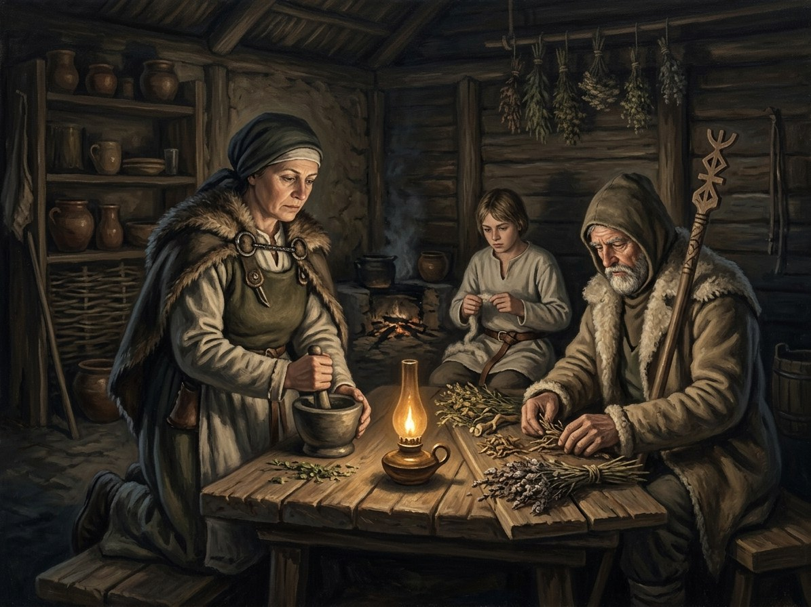

Žiniuoniai (village charm-healers)¶
Ryšiai
Practises: Užkalbėjimai (charms) — tier 1
Žiniuoniai (village charm-healers)

Žiniuoniai (village charm-healers) · faction¶
Tipas |
faction |
Pastaba |
Žiniuoniai: village charm-healers, bone-setters, and herbal practitioners. |
Overview¶
[Historical record] Lithuanian folk healers (žiniuoniai, užkalbėtojai, žolininkės, midwives and layers-out of the dead) kept a large oral tradition of spoken charms against snakebite, bleeding, fright, toothache and fire, whispered three or nine times over water, bread or salt. The tradition is documented chiefly in 19th-century collections; whether specific 14th-century practices were the same is unknown. The Church condemned charms, and many village priests used them anyway.
Wants (by book)¶
Book |
Goal |
Leverage |
Red line |
|---|---|---|---|
I |
Keep the sick alive in a war |
Herbs; charm over amber (Birutė, I ch. 3) |
A charm sold for money |
II-III |
Hold the villages as the Unbinding spreads |
Charm + herb on mortal wounds |
The Unburned dead |
III |
Lay out the dead, and feed the returned |
The layer-out Pilkoji at Kalniškės, 1404 (III ch. 7) |
A name lost |
IV |
Keep the charms alive under the Church’s ban |
Village priests who quietly use them |
Selling a charm |
V |
Remember the Queen |
Gedvilė, midwife, and the offerings at Palanga (V ch. 25, 29) |
Amber taken without a gift |
Patron Force¶
No canonical patron. [The saga’s invention] A tier-1 craft (Power systems §2.2 and §4): no gift is needed, only exact words from a living teacher and a medium. After the Unbinding, charms are the peasantry’s main defence against unbound spirits, and from the 1387 collapse of the clergy the žyniai become healers.
Internal tensions¶
A charm told to the wrong person dies; a charm said for money works at half strength; a healer who charms too much grows strange and takes a trace of what she removes. They are condemned by priests and sought by the same priests at night.
Notable members¶
No wiki character. The books name Pilkoji, a layer-out and midwife before she is sworn a wolf (III ch. 7), and Gedvilė, the Palanga midwife (V ch. 25, 29). See also Užkalbėjimai and the Dykra.
Sąsajos¶
graph LR
uzkalbejimai["Užkalbėjimai (charms)"]
village_healers["Žiniuoniai (village charm-healers)"]
village_healers -->|Practises| uzkalbejimai
style village_healers stroke-width:3px